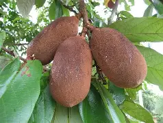
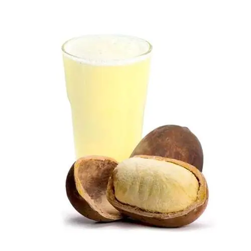
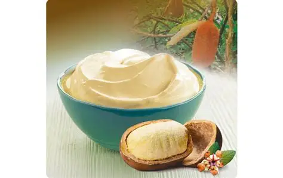
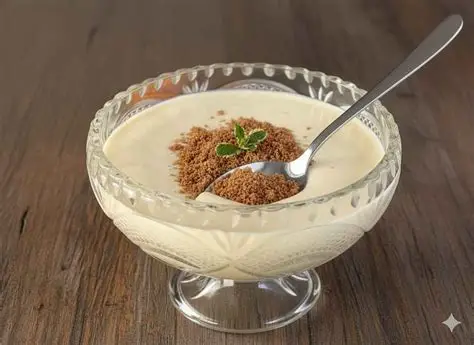

ORIGEM:
O cupuaçu (Theobroma grandiflorum) é uma fruta nativa da região Amazônica, encontrada principalmente no Brasil,
nos estados do Pará, Amazonas, Amapá, Acre e Maranhão. Também ocorre em países como Colômbia, Peru, Bolívia,
Equador e Costa Rica.
Pertence à mesma família do cacau, sendo conhecido popularmente como “cacau grande”. Seu nome tem origem no
tupi antigo e está relacionado à grandeza do fruto.

PLANTIO E ÉPOCA:
O cupuaçuzeiro se desenvolve melhor em clima quente e úmido, típico da Amazônia, com solos férteis e boa drenagem.
Condições ideais:
Temperatura entre 22°C e 30°C
Alta umidade relativa do ar
Chuvas frequentes
Solo rico em matéria orgânica
Época de Produção:
Produção principal: outubro a abril
Pico da colheita: janeiro, fevereiro e março
A planta pode produzir frutos por muitos anos, havendo registros de árvores com mais de 80 anos ainda produtivas.
FLORAÇÃO:
A floração ocorre geralmente entre junho e março, com maior intensidade entre novembro e janeiro, coincidindo com períodos de menor incidência de chuvas.
As flores nascem diretamente no tronco e nos galhos mais grossos, característica comum da família do cacau.
DETALHES DAS ESPÉCIES:
Na Amazônia são encontradas três variedades principais:
Cupuaçu-redondo
Cupuaçu-mamona
Cupuaçu-sem-semente
Mais comum
Formato alongado
Formato arredondado
Fruto arredondado
Casca mais grossa
Sem sementes
Casca de 6 a 7 mm
Peso médio: 2,5 kg
Menos comum
Peso médio: 1,5 a 2,5 kg
Pode chegar a 4 kg
N/A
COMPOSIÇÃO NUTRICIONAL (100 g de polpa):
Nutriente
Quantidade
Energia
49 kcal
Proteínas
1,2 g
Gorduras
1 g
Carboidratos
10,4 g
Fibras
3,1 g
Vitamina C
24,5 mg
Potássio
331 mg
BENEFÍCIOS DO CONSUMO:
Melhora o funcionamento intestinal:
Rico em fibras, ajuda no trânsito intestinal e combate a prisão de ventre.
Mais disposição e concentração:
Possui teobromina, substância semelhante à cafeína, que estimula o cérebro.
Ação antioxidante:
Contém vitamina C e compostos fenólicos que combatem radicais livres.
Ajuda no emagrecimento:
As fibras aumentam a saciedade.
Saúde cardiovascular:
A teobromina auxilia na circulação sanguínea.
Controle da glicose:
As fibras ajudam no equilíbrio do açúcar no sangue.
RECEITAS DETALHADAS:
Receita 1: Suco de Cupuaçu
Ingredientes:
200 g de polpa de cupuaçu
400 ml de água gelada
Açúcar ou mel a gosto
Gelo
Modo de preparo:
Bata tudo no liquidificador por 2 minutos.
Coe se desejar.
Sirva gelado.

⸻⸻⸻⸻⸻⸻⸻
Receita 2: Creme de Cupuaçu
Ingredientes:
1 kg de polpa de cupuaçu
2 caixas de leite condensado
2 caixas de creme de leite
Modo de preparo:
Bata todos os ingredientes no liquidificador.
Coloque em recipiente de vidro.
Leve à geladeira por 4 horas.
Sirva gelado.

⸻⸻⸻⸻⸻⸻⸻
Receita 3: Mousse de Cupuaçu
Ingredientes:
300 g de polpa de cupuaçu
1 lata de leite condensado
1 caixa de creme de leite
1 envelope de gelatina sem sabor
Modo de preparo:
Hidrate a gelatina conforme embalagem.
Bata todos os ingredientes no liquidificador.
Coloque em taças.
Leve à geladeira por 3 horas.

BIBLIOGRAFIA:
EMBRAPA. Cupuaçu: manejo, produção e processamento.
TUA SAÚDE. Cupuaçu: benefícios e como consumir.
Diário do Nordeste – Ser Saúde. Cupuaçu: o que é, quais os benefícios e como comer.
Rede Globo. Cupuaçu, você conhece? Curiosidades sobre a fruta.